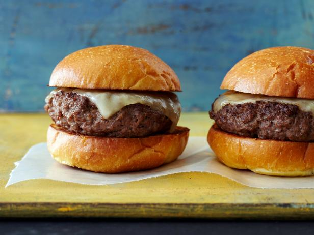

Garlic Burger
Description
The burger is an American classic dinner meal. I like to make a slight
variation on the burger that adds a little more flavor to it without
that much more. It's simple, add a little fresh garlic.
Ingredients
- ground beef
- worcestershire sauce
- fresh garlic cloves
- salt
- pepper
- fresh parsley
- swiss cheese
- parmesan cheese
- pretzel bun
Directions
These directions are based on a single burger. To use it for more multiply
all the amounts by how many burgers you are making. Take around 6 ounces
of ground beef. Add about half a chopped clove of garlic into the beef.
sprinkle some salt, pepper, chopped fresh parsley and shredded parmesan
cheese into the beef. Mix up the ingredients in the beef with your hands.
Flatten it into a patty. Cook on stovetop on low to medium heat until it is
medium, flipping as needed. Add a splash of worcestershire sauce to the pan.
Do NOT press down on the patty. Put a slice of swiss cheese on top. Once it
melts serve on a pretzel bun. Top with whatever you desire.
| Restaraunt | Health Facts | ||||
|---|---|---|---|---|---|
| Burger Joint | Calories | Fat (g) | Sodium (g) | Size (g) | |
| Gross and Unhealthy | McDonald's | 750 | 43 | 1280 | N/A |
| Burger King | 1020 | 65 | 1090 | 417 | |
| Wendy's | 1090 | 66 | 1990 | N/A | |
| Unhealthy But Tasty | 5 Guys | 920 | 62 | 1310 | 317 |
| Dairy Queen | 1010 | 71 | 1670 | 321 | |
| Sonic | 1240 | 87 | 1690 | 396 | |